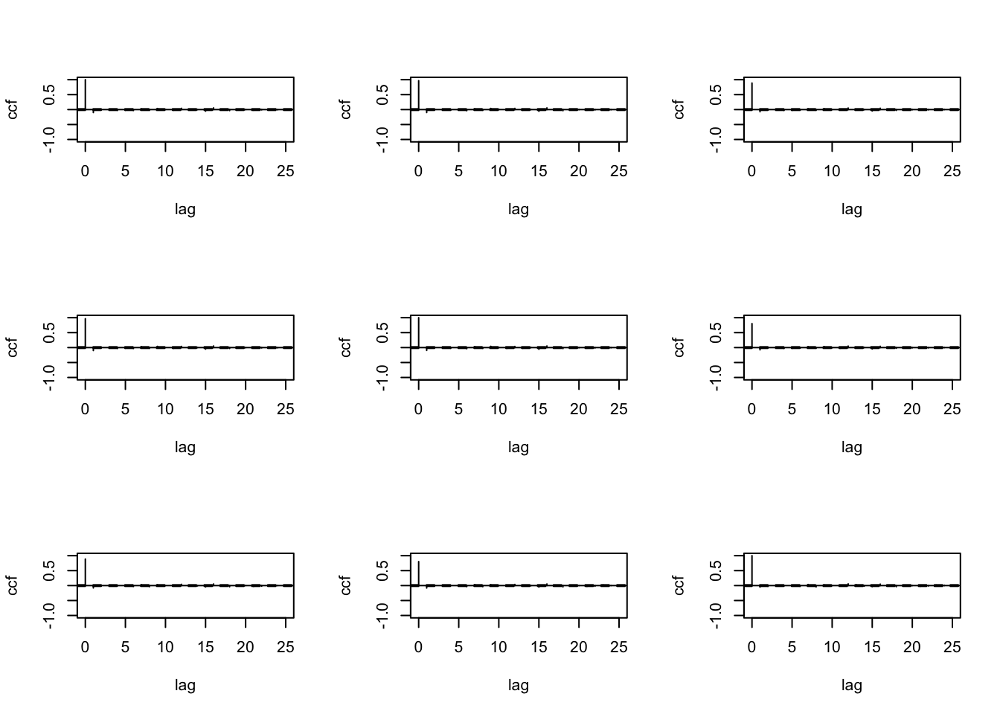

Chapter 5 Multivariate Time Series Modeling
This chapter is heavily based on Chapter 13 of Chatfield and Xing (2019) and Tsay (2013) .
5.1 Introduction
- Multivariate time series analysis considers observations taken simultaneously on two or more time series.
- Focus of multivariate time series analysis
- Study the dynamic relationships between variables
- Serial dependence within each series and the interdependence between series.
- Improve the accuracy of prediction
- Challengers with Multivariate models
- Model building process is more difficult for multivariate than univariate models
- More variables to measure (More change of mistakes in the data)
- More parameters to estimate
- Wider pool of candidate models
- More vulnerable to specification than simpler univariate models.
- Balance between parsimonious modelling and accurate identification.
5.2 The Cross-Correlation Function
- Cross-correlation function is a key tool in multivariate time series analysis.
- Let \(\{\mathbf{X}_t\}\) is an m-variate multivariate process, where \(\mathbf{X}_t^T = (X_{1t}, X_{2t}, \dots, X_{mt})\)
Cross-covariance
- Let \(\mathbf{\mu}_t\) be the vector of mean values of \(\{\mathbf{X}_t\}\) at time t.
- Then its \(i\)th component is \(\mu_{it}=E(X_{it})\).
- Let \(\Gamma(t,t+k)\) be the cross-covariance matrix of \(\mathbf{X}_t\) and \(\mathbf{X}_{t+k}\) such that its \((i,j)\)th element is the cross-covariance coefficient of \(X_{it}\) and \(X_{j, t+k}.\)
- A multivariate process is said to be second-order stationary if the mean and the cross-covariance matrices at different lags do not depend on time.
- Then \(\mathbf{\mu}_t\) will be a constant (say \(\mathbf{\mu}\)) and \(\Gamma(t,t+k)\) will be a function of the lag \(k\) only ( \(\Gamma(k)\)).
- Then \(\gamma_{ij}(k)\), the \((i,j)\)th element of (\(\Gamma(k)\)) can be written as
\[\gamma_{ij}(k)=\text{Cov}(X_{it},X_{j,t+k} )= E[(X_{it}-\mu_i)(X_{j,t+k}-\mu_j)]\]
- In the stationary case, the set of cross-covariance matrices, \(\Gamma(k)\) for \(k=0, \pm1, \pm2, \dots,\) is known as covariance matrix function.
- Since
\[\gamma_{ij}(k)= \text{Cov}(X_{it},X_{j,t+k} )= \text{Cov}(X_{j,t+k}, X_{it} ) = \gamma_{ij}(-k),\]
we have \[\Gamma(k)=\Gamma^T(-k), \quad k=0, \pm1, \pm2, \dots.\] - The diagonal terms, \(\gamma_{ii}(k)\), are auto- rather than cross- covariances, and therefore have the property of being an even function of lags.
Cross-correlation
- Let \(R(k)\) be the cross-correlation matrix function of the process.
- The \((i,j)\)the element of \(R(k)\) is given by
\[\rho_{ij}(k)= \text{Corr}(X_{j,t+k}, X_{it} )=\gamma_{ij}(k)/\sigma_i\sigma_j\] where \(\sigma_i\) is the standard deviations of \(X_{it}\) (this can also be expressed as \(\sqrt{\gamma_{ii}(0)}.\)) - When \(k>0\), the correlation coefficient measures the linear dependence of \(X_{j, t+k}\) on \(X_{it},\) which occurs after time \(t\). - If \(\rho_{ij}(k)\neq0\) and \(k>0\), the series \(X_{it}\) leads the series \(X_{jt}\) at lag \(k\). - Furthermore, we can write \[R(K)=R^T(-k), \quad \quad k=0, \pm1, \pm2, \dots.\] - Therefore, in practice, it is enough to consider the cross-correlation matrices \(R(k)\) for \(k>0\).
Sample cross-correlation coefficient
- Let \(T\) be the total number of observations collected on the \(m\) variables over the same time period.
- Then the sample cross-covariance coefficient of \(X_i\) and \(X_j\) at lag \(k\) is given by
\[ c_{ij}(k)= \begin{cases} \sum_{t=1}^{T-k}(x_{it}-\bar{x_i})(x_{j,t+k}-\bar{x_j})/ T,& \quad k=0, 1,2, \dots,(T-1)\\ \sum_{t=1-k}^{T}(x_{it}-\bar{x_i})(x_{j,t+k}-\bar{x_j})/ T,& \quad k=-1,-2, \dots,-(T-1). \end{cases} \]
- The sample cross-correlation coefiicient of \(X_i\) and \(X_j\) at lag \(k\) is given by \[\gamma_{ij}(k)=c_{ij}(k)/s_is_j\] where \(s_i=\sqrt{c_{ii}(0)}\) is the sample standard deviation of observations on the \(i\)th variable.
# Tidy financial analysis
library(tidyquant)
#S&P 500 index
sp500 <- tq_get("^GSPC", from = "1995-01-04", to = "2021-02-25" )
print(sp500)## # A tibble: 6,582 x 8
## symbol date open high low close volume adjusted
## <chr> <date> <dbl> <dbl> <dbl> <dbl> <dbl> <dbl>
## 1 ^GSPC 1995-01-04 459. 461. 458. 461. 3.20e8 461.
## 2 ^GSPC 1995-01-05 461. 461. 460. 460. 3.09e8 460.
## 3 ^GSPC 1995-01-06 460. 462. 459. 461. 3.08e8 461.
## 4 ^GSPC 1995-01-09 461. 462. 460. 461. 2.79e8 461.
## 5 ^GSPC 1995-01-10 461. 465. 461. 462. 3.52e8 462.
## 6 ^GSPC 1995-01-11 462. 464. 459. 462. 3.46e8 462.
## 7 ^GSPC 1995-01-12 462. 462. 461. 462. 3.13e8 462.
## 8 ^GSPC 1995-01-13 462. 466. 462. 466. 3.37e8 466.
## 9 ^GSPC 1995-01-16 466. 470. 466. 469. 3.16e8 469.
## 10 ^GSPC 1995-01-17 469. 470. 468. 470. 3.32e8 470.
## # … with 6,572 more rows# The Dow Jones Industrial Average (DJIA)
dji<- tq_get("^DJI", from = "1995-01-04", to = "2021-02-25" )
print(dji)## # A tibble: 6,582 x 8
## symbol date open high low close volume adjusted
## <chr> <date> <dbl> <dbl> <dbl> <dbl> <dbl> <dbl>
## 1 ^DJI 1995-01-04 3838. 3858. 3831. 3858. 272200 3858.
## 2 ^DJI 1995-01-05 3858. 3861. 3843. 3851. 258100 3851.
## 3 ^DJI 1995-01-06 3851. 3887. 3842. 3867. 302400 3867.
## 4 ^DJI 1995-01-09 3867. 3874. 3853. 3861. 208200 3861.
## 5 ^DJI 1995-01-10 3861. 3899. 3861. 3867. 282500 3867.
## 6 ^DJI 1995-01-11 3867. 3883. 3840. 3862. 281000 3862.
## 7 ^DJI 1995-01-12 3862 3864. 3851. 3859 237400 3859
## 8 ^DJI 1995-01-13 3859 3910. 3859 3908. 305800 3908.
## 9 ^DJI 1995-01-16 3908. 3937. 3907. 3932. 292500 3932.
## 10 ^DJI 1995-01-17 3932. 3935. 3916. 3931. 268800 3931.
## # … with 6,572 more rows# The Nasdaq Composite
nasdaq<- tq_get("^IXIC", from = "1995-01-04", to = "2021-02-25" )
print(nasdaq)## # A tibble: 6,582 x 8
## symbol date open high low close volume adjusted
## <chr> <date> <dbl> <dbl> <dbl> <dbl> <dbl> <dbl>
## 1 ^IXIC 1995-01-04 745. 746. 740. 746. 2.90e8 746.
## 2 ^IXIC 1995-01-05 747. 748. 745. 746. 2.98e8 746.
## 3 ^IXIC 1995-01-06 746. 751. 746. 750. 3.13e8 750.
## 4 ^IXIC 1995-01-09 750. 753. 750. 752. 2.67e8 752.
## 5 ^IXIC 1995-01-10 754. 759. 754. 757. 3.54e8 757.
## 6 ^IXIC 1995-01-11 758. 760. 752. 756. 3.30e8 756.
## 7 ^IXIC 1995-01-12 756. 757. 755. 757. 3.02e8 757.
## 8 ^IXIC 1995-01-13 758. 762. 757. 762. 3.14e8 762.
## 9 ^IXIC 1995-01-16 762. 769. 762. 768. 3.01e8 768.
## 10 ^IXIC 1995-01-17 769. 772. 768. 772. 3.37e8 772.
## # … with 6,572 more rows# Convert each assets raw adjusted closing prices to returns
sp500_return <- sp500 %>%
tq_transmute(select = adjusted,
mutate_fun = periodReturn,
period = "daily")
dji_return <- dji %>%
tq_transmute(select = adjusted,
mutate_fun = periodReturn,
period = "daily")
nasdaq_return <- nasdaq %>%
tq_transmute(select = adjusted,
mutate_fun = periodReturn,
period = "daily")
p1 <- sp500_return %>%
as_tsibble(index = date) %>%
autoplot(daily.returns) +
labs(x = "Day", y= "S&P500")
p2 <- dji_return %>%
as_tsibble(index = date) %>%
autoplot(daily.returns) +
labs(x = "Day", y= "Dow Jones")
p3 <- nasdaq_return %>%
as_tsibble(index = date) %>%
autoplot(daily.returns) +
labs(x = "Day", y= "Nasdaq")
p1 / p2/ p3Figure 5.1: Daily returns of adjusted closing prices of the Standard & Poor’s 500 (S&P500), the Dow Jones Indutrial Average and the Nasdaq Composite indices from January 4, 1995 to February 25, 2021
A function of computing sample cross correlation
library(MTS)
data <- full_join(sp500_return, dji_return, by= "date" )
data <- full_join(data, nasdaq_return, by ="date" )
colnames(data) <- c("date", "sp500", "dji", "nasdaq")
ret <- data %>%
select(sp500, dji, nasdaq) %>%
as.matrix()
MTSplot(ret)

5.3 References:
Chatfield, C., & Xing, H. (2019). The analysis of time series: an introduction with R. CRC press.
Tsay, R. S. (2013). Multivariate time series analysis: with R and financial applications. John Wiley & Sons.
References
Chatfield, Chris, and Haipeng Xing. 2019. The Analysis of Time Series: An Introduction with R. CRC press.
Tsay, Ruey S. 2013. Multivariate Time Series Analysis: With R and Financial Applications. John Wiley & Sons.